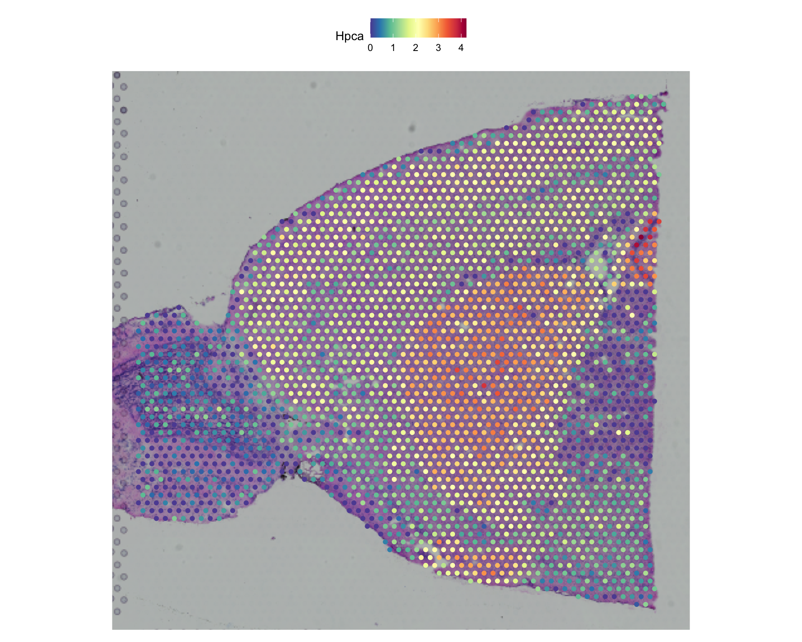
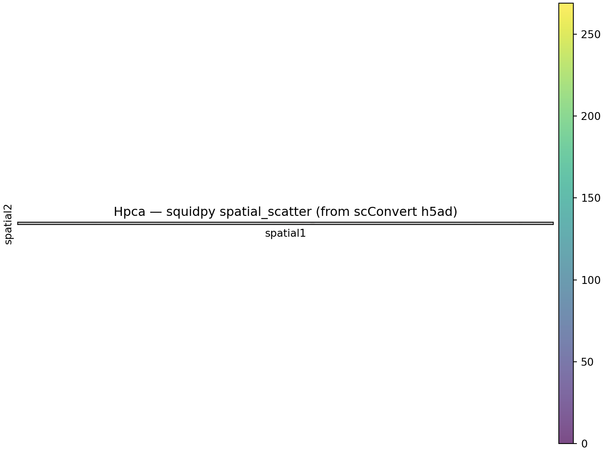
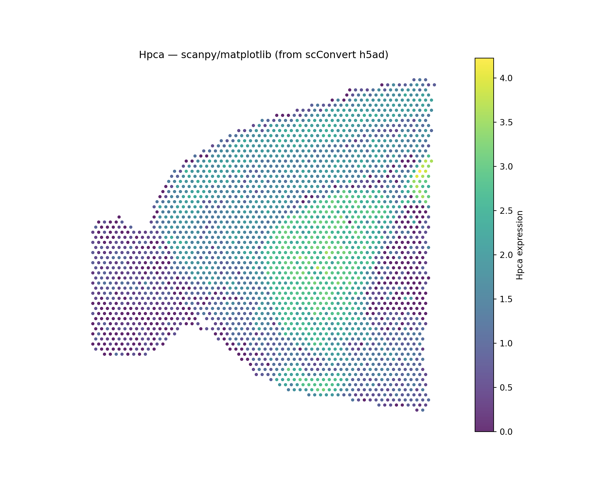
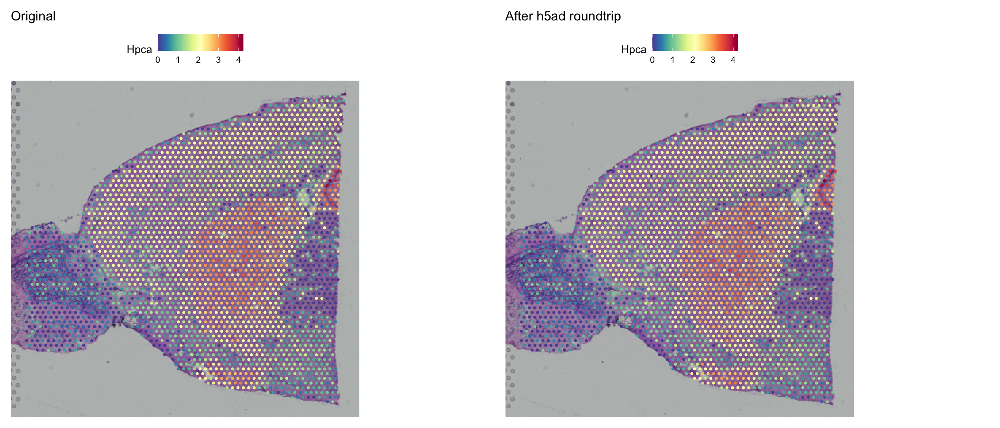

Overview
This vignette demonstrates how scConvert handles 10x Genomics
Visium spatial transcriptomics data, including tissue images,
scale factors, and spot coordinates. Visium data is stored in h5ad files
with spatial-specific fields (obsm/spatial,
uns/spatial) that scConvert automatically reconstructs into
Seurat VisiumV2 image objects.
We show that the exported h5ad is natively usable in scanpy and squidpy (spatial scatter plots, Moran’s I), and that all key components — dimensions, metadata, barcodes, features, spatial coordinates, scale factors, and dimensionality reductions — are preserved.
Load Visium data
We use the stxBrain dataset (mouse brain anterior1, ~2,700 spots x ~31,000 genes):
library(SeuratData)
brain <- UpdateSeuratObject(LoadData("stxBrain", type = "anterior1"))
brain <- NormalizeData(brain)
cat("Cells:", ncol(brain), "\n")
#> Cells: 2696
cat("Genes:", nrow(brain), "\n")
#> Genes: 31053
cat("Images:", Images(brain), "\n")
#> Images: anterior1
cat("Layers:", paste(Layers(brain), collapse = ", "), "\n")
#> Layers: counts, data
cat("Metadata columns:", ncol(brain[[]]), "\n")
#> Metadata columns: 5Visualize the original spatial data
SpatialFeaturePlot(brain, features = "Hpca", pt.size.factor = 1.5)
Hpca (Hippocalcin) is a marker for hippocampal neurons, showing strong regional expression.
Export to h5ad
scConvert writes Visium spatial data to h5ad using scanpy/squidpy conventions:
| Seurat Component | h5ad Location | Description |
|---|---|---|
| Tissue coordinates | obsm/spatial |
Spot XY positions |
| Scale factors | uns/spatial/{lib}/scalefactors |
spot_diameter_fullres,
tissue_hires_scalef, etc. |
| Tissue image (lowres) | uns/spatial/{lib}/images/lowres |
Low-resolution H&E image |
| Tissue image (hires) | uns/spatial/{lib}/images/hires |
High-resolution H&E image |
h5ad_path <- tempfile(fileext = ".h5ad")
SeuratToH5AD(brain, h5ad_path, overwrite = TRUE)
cat("File size:", round(file.size(h5ad_path) / 1024^2, 1), "MB\n")
#> File size: 69.7 MBValidate in Python with scanpy
The exported h5ad is immediately usable in the scverse ecosystem — no extra configuration needed:
import scanpy as sc
import numpy as np
adata = sc.read_h5ad(r.h5ad_path)
print(adata)
#> AnnData object with n_obs × n_vars = 2696 × 31053
#> obs: 'orig.ident', 'nCount_Spatial', 'nFeature_Spatial', 'slice', 'region'
#> uns: 'spatial'
#> obsm: 'spatial'
print(f"\nobsm keys: {list(adata.obsm.keys())}")
#>
#> obsm keys: ['spatial']
print(f"Spatial coords shape: {adata.obsm['spatial'].shape}")
#> Spatial coords shape: (2696, 2)
print(f"Spatial coord range X: [{adata.obsm['spatial'][:,0].min():.1f}, {adata.obsm['spatial'][:,0].max():.1f}]")
#> Spatial coord range X: [1480.0, 9533.0]
print(f"Spatial coord range Y: [{adata.obsm['spatial'][:,1].min():.1f}, {adata.obsm['spatial'][:,1].max():.1f}]")
#> Spatial coord range Y: [2685.0, 10469.0]
print(f"No NaN in coords: {not np.isnan(adata.obsm['spatial']).any()}")
#> No NaN in coords: True
# Verify uns/spatial structure matches scanpy convention
if "spatial" in adata.uns:
lib_ids = list(adata.uns["spatial"].keys())
print(f"\nSpatial library IDs: {lib_ids}")
for lib_id in lib_ids:
lib = adata.uns["spatial"][lib_id]
if "images" in lib:
for k, v in lib["images"].items():
print(f" Image '{k}': shape {v.shape}, dtype {v.dtype}")
if "scalefactors" in lib:
sf = lib["scalefactors"]
print(f" Scale factors: {sf}")
# Verify standard keys exist
for key in ["spot_diameter_fullres", "tissue_hires_scalef", "tissue_lowres_scalef"]:
print(f" {key}: {'present' if key in sf else 'MISSING'}")
#>
#> Spatial library IDs: ['anterior1']
#> Image 'lowres': shape (3, 600, 599), dtype float64
#> Scale factors: {'fiducial_diameter_fullres': array([144.54121947]), 'spot_diameter_fullres': array([89.47789777]), 'tissue_hires_scalef': array([0.17211704]), 'tissue_lowres_scalef': array([0.05163511])}
#> spot_diameter_fullres: present
#> tissue_hires_scalef: present
#> tissue_lowres_scalef: presentSpatial scatter plot with squidpy
Because scConvert writes scale factors with the correct
scanpy-convention names (spot_diameter_fullres,
tissue_hires_scalef, etc.), squidpy plotting works out of
the box:
import squidpy as sq
sq.pl.spatial_scatter(adata, color="Hpca", library_id=list(adata.uns["spatial"].keys())[0],
img_res_key="lowres", size=1.5, alpha=0.7,
title="Hpca — squidpy spatial_scatter (from scConvert h5ad)")
Scanpy spatial plot (coordinate-based)
import matplotlib.pyplot as plt
coords = adata.obsm["spatial"]
expr = adata[:, "Hpca"].X.toarray().flatten() if hasattr(adata[:, "Hpca"].X, 'toarray') else adata[:, "Hpca"].X.flatten()
fig, ax = plt.subplots(1, 1, figsize=(10, 8))
sc_plot = ax.scatter(coords[:, 0], -coords[:, 1], c=expr, s=8, cmap="viridis", alpha=0.8)
plt.colorbar(sc_plot, ax=ax, label="Hpca expression")
#> <matplotlib.colorbar.Colorbar object at 0x62c69c650>
ax.set_title("Hpca — scanpy/matplotlib (from scConvert h5ad)")
ax.set_aspect("equal")
ax.axis("off")
#> (np.float64(1077.35), np.float64(9935.65), np.float64(-10858.2), np.float64(-2295.8))
plt.show()
Spatial analysis: Moran’s I
import squidpy as sq
sq.gr.spatial_neighbors(adata, coord_type="generic")
#>
[34mINFO
[0m Creating graph using `generic` coordinates and `
[3;35mNone
[0m` transform and `
[1;36m1
[0m`
#> libraries.
genes = list(adata.var_names[:5])
sq.gr.spatial_autocorr(adata, mode="moran", genes=genes)
print("Moran's I results:")
#> Moran's I results:
print(adata.uns["moranI"].head())
#> I pval_norm var_norm pval_norm_fdr_bh
#> Sox17 0.012438 0.123048 0.000122 NaN
#> Rp1 -0.000371 0.500000 0.000122 NaN
#> Xkr4 -0.009214 0.211632 0.000122 NaN
#> Gm1992 NaN NaN 0.000122 NaN
#> Gm37381 NaN NaN 0.000122 NaNVerify preservation in Seurat
Load the h5ad back into Seurat and verify that all key components are preserved:
brain_rt <- LoadH5AD(h5ad_path, verbose = FALSE)Dimension and barcode preservation
cat("=== Dimensions ===\n")
#> === Dimensions ===
cat("Original:", ncol(brain), "cells x", nrow(brain), "genes\n")
#> Original: 2696 cells x 31053 genes
cat("Loaded: ", ncol(brain_rt), "cells x", nrow(brain_rt), "genes\n")
#> Loaded: 2696 cells x 31053 genes
cat("Dims match:", ncol(brain) == ncol(brain_rt) && nrow(brain) == nrow(brain_rt), "\n")
#> Dims match: TRUE
cat("\n=== Barcodes ===\n")
#>
#> === Barcodes ===
common_cells <- intersect(colnames(brain), colnames(brain_rt))
cat("Shared barcodes:", length(common_cells), "/", ncol(brain), "\n")
#> Shared barcodes: 2696 / 2696
cat("\n=== Features ===\n")
#>
#> === Features ===
common_genes <- intersect(rownames(brain), rownames(brain_rt))
cat("Shared features:", length(common_genes), "/", nrow(brain), "\n")
#> Shared features: 31053 / 31053Expression value preservation
set.seed(42)
sc <- sample(common_cells, min(200, length(common_cells)))
sg <- sample(common_genes, min(100, length(common_genes)))
orig_vals <- as.numeric(GetAssayData(brain, layer = "counts")[sg, sc])
rt_vals <- as.numeric(GetAssayData(brain_rt, layer = "counts")[sg, sc])
cat("Values identical:", identical(orig_vals, rt_vals), "\n")
#> Values identical: TRUE
cat("Max absolute diff:", max(abs(orig_vals - rt_vals)), "\n")
#> Max absolute diff: 0Metadata preservation
orig_meta_cols <- colnames(brain[[]])
rt_meta_cols <- colnames(brain_rt[[]])
shared_meta <- intersect(orig_meta_cols, rt_meta_cols)
cat("Original metadata columns:", length(orig_meta_cols), "\n")
#> Original metadata columns: 5
cat("Loaded metadata columns: ", length(rt_meta_cols), "\n")
#> Loaded metadata columns: 9
cat("Shared columns:", length(shared_meta), "\n")
#> Shared columns: 5
cat("Columns:", paste(shared_meta, collapse = ", "), "\n")
#> Columns: orig.ident, nCount_Spatial, nFeature_Spatial, slice, region
# Check types match
types_match <- 0L
for (col in shared_meta) {
if (class(brain[[col, drop = TRUE]])[1] == class(brain_rt[[col, drop = TRUE]])[1]) {
types_match <- types_match + 1L
}
}
cat("Type-matching columns:", types_match, "/", length(shared_meta), "\n")
#> Type-matching columns: 5 / 5Spatial coordinate preservation
orig_coords <- GetTissueCoordinates(brain)
rt_coords <- tryCatch(GetTissueCoordinates(brain_rt), error = function(e) NULL)
if (!is.null(rt_coords)) {
# Select only numeric columns (VisiumV2 adds a 'cell' character column)
num_orig <- orig_coords[, sapply(orig_coords, is.numeric), drop = FALSE]
num_rt <- rt_coords[, sapply(rt_coords, is.numeric), drop = FALSE]
common <- intersect(rownames(num_orig), rownames(num_rt))
n <- min(ncol(num_orig), ncol(num_rt))
max_diff <- max(abs(as.matrix(num_orig[common, 1:n]) - as.matrix(num_rt[common, 1:n])))
cat("Coordinate max abs diff:", format(max_diff, scientific = TRUE), "\n")
cat("Coordinates preserved:", max_diff < 1e-6, "\n")
} else {
cat("Coordinates stored in meta.data (spatial_x, spatial_y)\n")
}
#> Coordinate max abs diff: 0e+00
#> Coordinates preserved: TRUEScale factor preservation
cat("=== Original ===\n")
#> === Original ===
orig_img <- brain[[Images(brain)[1]]]
cat("Image class:", class(orig_img)[1], "\n")
#> Image class: VisiumV2
tryCatch({
sf <- orig_img@scale.factors
cat("spot:", sf$spot, "\n")
cat("fiducial:", sf$fiducial, "\n")
cat("hires:", sf$hires, "\n")
cat("lowres:", sf$lowres, "\n")
}, error = function(e) cat("Scale factors not accessible via @scale.factors\n"))
#> spot: 89.4779
#> fiducial: 144.5412
#> hires: 0.172117
#> lowres: 0.05163511
if (length(Images(brain_rt)) > 0) {
cat("\n=== After h5ad roundtrip ===\n")
rt_img <- brain_rt[[Images(brain_rt)[1]]]
cat("Image class:", class(rt_img)[1], "\n")
tryCatch({
sf_rt <- rt_img@scale.factors
cat("spot:", sf_rt$spot, "\n")
cat("fiducial:", sf_rt$fiducial, "\n")
cat("hires:", sf_rt$hires, "\n")
cat("lowres:", sf_rt$lowres, "\n")
}, error = function(e) cat("Scale factors not accessible via @scale.factors\n"))
}
#>
#> === After h5ad roundtrip ===
#> Image class: VisiumV2
#> spot: 89.4779
#> fiducial: 144.5412
#> hires: 0.172117
#> lowres: 0.05163511Visualize loaded spatial data
library(patchwork)
p1 <- SpatialFeaturePlot(brain, features = "Hpca", pt.size.factor = 1.5) +
ggtitle("Original")
p2 <- tryCatch({
SpatialFeaturePlot(brain_rt, features = "Hpca", pt.size.factor = 1.5) +
ggtitle("After h5ad roundtrip")
}, error = function(e) {
# Fallback: coordinate-based plot
coords_df <- GetTissueCoordinates(brain_rt)
num_cols <- sapply(coords_df, is.numeric)
df <- data.frame(
x = coords_df[, which(num_cols)[1]],
y = coords_df[, which(num_cols)[2]],
expr = as.numeric(GetAssayData(brain_rt, layer = "data")["Hpca", ])
)
ggplot(df, aes(x = x, y = -y, color = expr)) +
geom_point(size = 1) +
scale_color_viridis_c() +
labs(title = "Hpca (h5ad roundtrip)", color = "Expression") +
theme_classic() + coord_fixed()
})
p1 + p2
Known limitations
-
Image reconstruction: Tissue images stored in h5ad
may require specific Seurat version compatibility for full
SpatialFeaturePlot()support. Coordinates and expression values are always preserved. - Non-Visium spatial: For Slide-seq, MERFISH, Xenium, and other technologies, see the Spatial Technologies vignette.
-
Large images: High-resolution images increase file
size substantially. Consider using
lowresimages for exploratory analysis.
Session Info
sessionInfo()
#> R version 4.5.2 (2025-10-31)
#> Platform: aarch64-apple-darwin20
#> Running under: macOS Tahoe 26.3
#>
#> Matrix products: default
#> BLAS: /System/Library/Frameworks/Accelerate.framework/Versions/A/Frameworks/vecLib.framework/Versions/A/libBLAS.dylib
#> LAPACK: /Library/Frameworks/R.framework/Versions/4.5-arm64/Resources/lib/libRlapack.dylib; LAPACK version 3.12.1
#>
#> locale:
#> [1] en_US.UTF-8/en_US.UTF-8/en_US.UTF-8/C/en_US.UTF-8/en_US.UTF-8
#>
#> time zone: America/Indiana/Indianapolis
#> tzcode source: internal
#>
#> attached base packages:
#> [1] stats graphics grDevices utils datasets methods base
#>
#> other attached packages:
#> [1] future_1.69.0 patchwork_1.3.2
#> [3] stxKidney.SeuratData_0.1.0 stxBrain.SeuratData_0.1.2
#> [5] ssHippo.SeuratData_3.1.4 pbmcref.SeuratData_1.0.0
#> [7] pbmcMultiome.SeuratData_0.1.4 pbmc3k.SeuratData_3.1.4
#> [9] panc8.SeuratData_3.0.2 cbmc.SeuratData_3.1.4
#> [11] SeuratData_0.2.2.9002 ggplot2_4.0.2
#> [13] Seurat_5.4.0 SeuratObject_5.3.0
#> [15] sp_2.2-1 scConvert_0.1.0
#>
#> loaded via a namespace (and not attached):
#> [1] RcppAnnoy_0.0.23 splines_4.5.2
#> [3] later_1.4.8 bitops_1.0-9
#> [5] tibble_3.3.1 BPCells_0.2.0
#> [7] polyclip_1.10-7 fastDummies_1.7.5
#> [9] lifecycle_1.0.5 globals_0.19.0
#> [11] lattice_0.22-9 hdf5r_1.3.12
#> [13] MASS_7.3-65 magrittr_2.0.4
#> [15] plotly_4.12.0 sass_0.4.10
#> [17] rmarkdown_2.30 jquerylib_0.1.4
#> [19] yaml_2.3.12 httpuv_1.6.16
#> [21] otel_0.2.0 sctransform_0.4.3
#> [23] spam_2.11-3 spatstat.sparse_3.1-0
#> [25] reticulate_1.45.0 cowplot_1.2.0
#> [27] pbapply_1.7-4 RColorBrewer_1.1-3
#> [29] abind_1.4-8 rvest_1.0.5
#> [31] Rtsne_0.17 GenomicRanges_1.62.1
#> [33] purrr_1.2.1 downlit_0.4.5
#> [35] ggraph_2.2.2 BiocGenerics_0.56.0
#> [37] hash_2.2.6.4 tweenr_2.0.3
#> [39] evmix_2.12 rappdirs_0.3.4
#> [41] IRanges_2.44.0 S4Vectors_0.48.0
#> [43] ggrepel_0.9.7 irlba_2.3.7
#> [45] listenv_0.10.0 spatstat.utils_3.2-1
#> [47] iNEXT_3.0.2 MatrixModels_0.5-4
#> [49] goftest_1.2-3 RSpectra_0.16-2
#> [51] scRepertoire_2.6.2 spatstat.random_3.4-4
#> [53] fitdistrplus_1.2-6 parallelly_1.46.1
#> [55] pkgdown_2.2.0 RcppRoll_0.3.1
#> [57] codetools_0.2-20 DelayedArray_0.36.0
#> [59] ggforce_0.5.0 xml2_1.5.2
#> [61] tidyselect_1.2.1 UCSC.utils_1.6.1
#> [63] farver_2.1.2 viridis_0.6.5
#> [65] matrixStats_1.5.0 stats4_4.5.2
#> [67] spatstat.explore_3.7-0 Seqinfo_1.0.0
#> [69] jsonlite_2.0.0 tidygraph_1.3.1
#> [71] progressr_0.18.0 ggalluvial_0.12.6
#> [73] ggridges_0.5.7 survival_3.8-6
#> [75] systemfonts_1.3.1 tools_4.5.2
#> [77] ragg_1.5.0 ica_1.0-3
#> [79] Rcpp_1.1.1 glue_1.8.0
#> [81] gridExtra_2.3 SparseArray_1.10.8
#> [83] xfun_0.56 MatrixGenerics_1.22.0
#> [85] GenomeInfoDb_1.46.2 dplyr_1.2.0
#> [87] withr_3.0.2 fastmap_1.2.0
#> [89] fansi_1.0.7 SparseM_1.84-2
#> [91] digest_0.6.39 R6_2.6.1
#> [93] mime_0.13 textshaping_1.0.4
#> [95] scattermore_1.2 tensor_1.5.1
#> [97] dichromat_2.0-0.1 spatstat.data_3.1-9
#> [99] tidyr_1.3.2 generics_0.1.4
#> [101] data.table_1.18.2.1 graphlayouts_1.2.3
#> [103] httr_1.4.8 htmlwidgets_1.6.4
#> [105] S4Arrays_1.10.1 whisker_0.4.1
#> [107] uwot_0.2.4 pkgconfig_2.0.3
#> [109] gtable_0.3.6 lmtest_0.9-40
#> [111] S7_0.2.1 SingleCellExperiment_1.32.0
#> [113] XVector_0.50.0 htmltools_0.5.9
#> [115] dotCall64_1.2 scales_1.4.0
#> [117] Biobase_2.70.0 png_0.1-8
#> [119] spatstat.univar_3.1-6 ggdendro_0.2.0
#> [121] knitr_1.51 Signac_1.16.0
#> [123] rjson_0.2.23 reshape2_1.4.5
#> [125] nlme_3.1-168 cachem_1.1.0
#> [127] zoo_1.8-15 stringr_1.6.0
#> [129] KernSmooth_2.23-26 parallel_4.5.2
#> [131] miniUI_0.1.2 desc_1.4.3
#> [133] pillar_1.11.1 grid_4.5.2
#> [135] vctrs_0.7.1 RANN_2.6.2
#> [137] promises_1.5.0 xtable_1.8-8
#> [139] cluster_2.1.8.2 evaluate_1.0.5
#> [141] Rsamtools_2.26.0 cli_3.6.5
#> [143] compiler_4.5.2 rlang_1.1.7
#> [145] crayon_1.5.3 future.apply_1.20.2
#> [147] labeling_0.4.3 immApex_1.4.3
#> [149] plyr_1.8.9 fs_1.6.6
#> [151] stringi_1.8.7 BiocParallel_1.44.0
#> [153] viridisLite_0.4.3 deldir_2.0-4
#> [155] Biostrings_2.78.0 gsl_2.1-9
#> [157] lazyeval_0.2.2 spatstat.geom_3.7-0
#> [159] quantreg_6.1 Matrix_1.7-4
#> [161] RcppHNSW_0.6.0 bit64_4.6.0-1
#> [163] shiny_1.13.0 SummarizedExperiment_1.40.0
#> [165] ROCR_1.0-12 igraph_2.2.2
#> [167] memoise_2.0.1 bslib_0.10.0
#> [169] fastmatch_1.1-8 bit_4.6.0